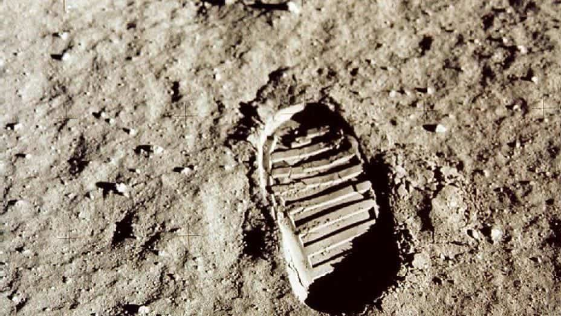

Qu'est ce que le projet Dear Moon ?
Le projet dearmoon est une mission de tourisme lunaire, c'est un projet artistique pensé par le milliardaire japonais Yusaku Maezawa. Le projet est le suivant : un vol spatial privé avec Maezawa, plusieurs artistes ainsi que deux membres d'équipage, à bord d'un vaisseau spatial SpaceX BFR volant autour de la Lune. Ce projet a été dévoilé en septembre 2018, le vol devrait avoir lieu au plus tôt en 2023. L'objectif de ce vol est de faire voyager six à huit artistes pour une tournée de six jours autour de la Lune. Maezawa s'attend à ce que l'expérience du tourisme spatiale inspirera les artistes. Les oeuvres seront postées quelques temps après le voyage.
Maezawa avait précédemment contracté en 2017 avec SpaceX pour un survol lunaire dans un vaisseau "Dragon 2" beaucoup plus petit qui n'aurait transporté que deux passagers. Mais selon une annonce de SpaceX au début de l'année 2018, le plan Falcon Heavy a été mis de coté pour effectuer le vol avec BFR. Le BFR est en cours de développement, le vol avec équipage n'aura pas lieu jusqu'a ce que les systèmes soient testés sur Terre et dans l'espace extra-atmosphérique.